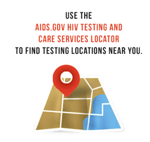

What Are The Types Of HIV Tests And How Do They Work?
The most common HIV test is the antibody screening test (immunoassay), which tests for the antibodies that your body makes against HIV. The immunoassay may be conducted in a lab or as a rapid test at the testing site. It may be performed on blood or oral fluid (not saliva). Because the level of antibody in oral fluid is lower than it is in blood, blood tests tend to find infection sooner after exposure than do oral fluid tests. In addition, most blood-based lab tests find infection sooner after exposure than rapid HIV tests.
Several tests are being used more commonly that can detect both antibodies and antigen (part of the virus itself). These tests can find recent infection earlier than tests that detect only antibodies. These antigen/antibody combination tests can find HIV as soon as 3 weeks after exposure to the virus, but they are only available for testing blood, not oral fluid. Not all testing sites offer this test by default; if you believe you have been recently exposed to HIV, be sure to let your provider know and ask if this type of test is available.
The rapid test is an immunoassay used for screening, and it produces quick results, in 30 minutes or less. Rapid tests use blood or oral fluid to look for antibodies to HIV. If an immunoassay (lab test or rapid test) is conducted during the window period (i.e., the period after exposure but before the test can find antibodies), the test may not find antibodies and may give a false-negative result. All immunoassays that are positive need a follow-up test to confirm the result.
Follow-up diagnostic testing is performed if the first immunoassay result is positive. Follow-up tests include: an antibody differentiation test, which distinguishes HIV-1 from HIV-2; an HIV-1 nucleic acid test, which looks for virus directly, or the Western blot or indirect immunofluorescence assay, which detect antibodies.
Immunoassays are generally very accurate, but follow-up testing allows you and your health care provider to be sure the diagnosis is right. If your first test is a rapid test, and it is positive, you will be directed to a medical setting to get follow-up testing. If your first test is a lab test, and it is positive, the lab will conduct follow-up testing, usually on the same blood specimen as the first test.
Home HIV Tests
Currently there are only two home HIV tests: the Home Access HIV-1 Test System and the OraQuick In-home HIV test. If you buy your home test online make sure the HIV test is FDA-approved.
The Home Access HIV-1 Test System is a home collection kit that involves pricking your finger to collect a blood sample, sending the sample to a licensed laboratory, and then calling in for results as early as the next business day. This test is anonymous. If the test is positive, a follow-up test is performed right away, and the results include the follow-up test. The manufacturer provides confidential counseling and referral to treatment. The tests conducted on the blood sample collected at home find infection later after infection than most lab-based tests using blood from a vein, but earlier than tests conducted with oral fluid.
The OraQuick In-Home HIV Test provides rapid results in the home. The testing procedure involves swabbing your mouth for an oral fluid sample and using a kit to test it. Results are available in 20 minutes. If you test positive, you will need a follow-up test. The manufacturer provides confidential counseling and referral to follow-up testing sites. Because the level of antibody in oral fluid is lower than it is in blood, oral fluid tests find infection later after exposure than do blood tests. Up to 1 in 12 people may receive a false negative result with this test.
RNA Tests
RNA tests detect the virus directly (instead of the antibodies to HIV) and thus can detect HIV at about 10 days after infection—as soon as it appears in the bloodstream, before antibodies develop. These tests cost more than antibody tests and are generally not used as a screening test, although your doctor may order one as a follow-up test, after a positive antibody test, or as part of a clinical workup.